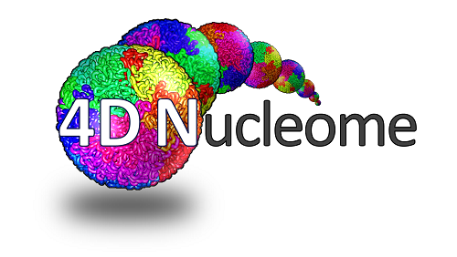
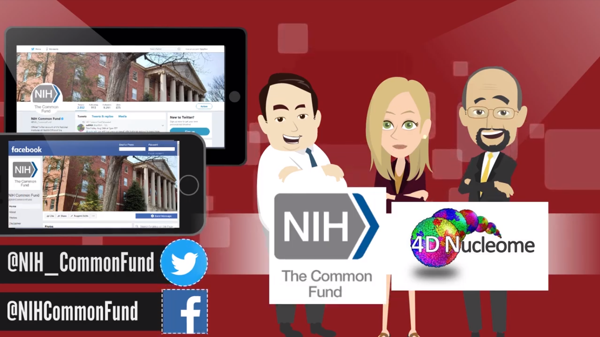
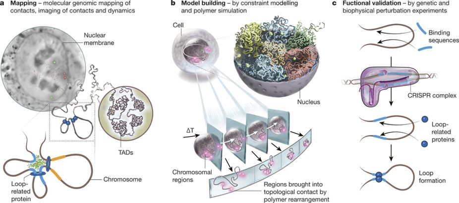

◀
Four new (Phase 2) 4D Nucleome RFAs are out

- Real Time Chromatin Dynamics and Function (U01 Clinical Trial Not Allowed) (RFA-RM-20-003)
- 4DN Centers for Data Integration, Modeling and Visualization (UM1 Clinical Trial Not Allowed) (RFA-RM-20-004)
- 4DN Organization and Function in Human Health and Disease (U01 Clinical Trial Not Allowed) (RFA-RM-20-005)
- New Investigator Projects on 4DN Organization and Function in Human Health and Disease (U01 Clinical Trial Not Allowed) (RFA-RM-20-006)

What is the 4D Nucleome Program?
Watch this video on
Youtube to learn how 4DN aims to improve public health!

The 4D Nucleome Network aims to develop and apply approaches to map the structure and
dynamics of the human and mouse genomes in space and time with the goal of gaining deeper
mechanistic insights into how the nucleus is organized and functions. The project will
develop
and benchmark experimental and computational approaches for measuring genome conformation
and
nuclear organization, and investigate how these contribute to gene regulation and other
genome
functions. Validated experimental technologies will be combined with biophysical approaches
to
generate quantitative models of spatial genome organization in different biological states,
both in cell populations and in single cells. The 4D nucleome project.
Nature
549, pages 219–226
▶